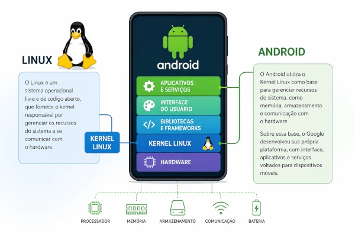
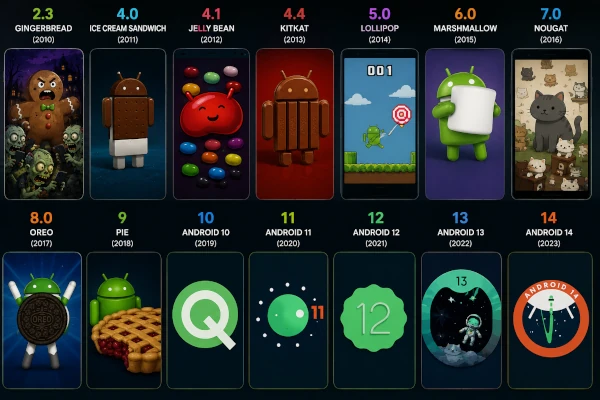
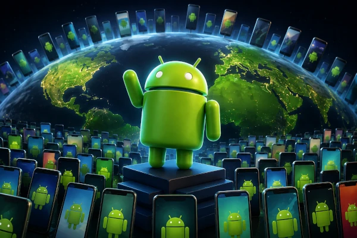

Curiosidades que você talvez não conheça sobre o Android.
Android e Linux são a mesma coisa?
Não exatamente. O Android não é uma distribuição Linux, mas utiliza o Kernel Linux como base para gerenciar recursos do sistema, como memória, armazenamento e comunicação com o hardware. Sobre essa base, o Google desenvolveu uma plataforma própria, com interface, aplicativos e serviços voltados para dispositivos móveis. Em outras palavras, o Android foi construído sobre o Linux, mas possui características e tecnologias que o tornam um sistema operacional diferente.

Por que algumas versões do Android escondiam zumbis ou um Demônio nas configurações da versão?
Se você já explorou as configurações de um celular Android antigo, talvez tenha encontrado uma imagem estranha com zumbis, criaturas assustadoras ou até mesmo um robô Android com aparência sombria. Mas não se preocupe: isso nunca foi um vírus nem algo relacionado ao ocultismo.
Essas imagens faziam parte dos Easter Eggs do Android. O termo Easter Egg (ou "ovo de Páscoa") é usado na informática para descrever conteúdos secretos que os desenvolvedores escondem em programas, jogos e sistemas operacionais como uma forma de diversão.
O exemplo mais famoso apareceu no Android 2.3 Gingerbread (2010). Ao tocar várias vezes na versão do Android nas configurações, surgia uma ilustração criada pelo artista Jack Larson. Nela, um enorme boneco de gengibre aparecia cercado por zumbis usando celulares, enquanto pequenos robôs Android observavam a cena. A arte tinha um estilo inspirado em filmes de terror e quadrinhos, mas não possuía nenhum significado oculto: era apenas uma brincadeira dos desenvolvedores.

Como o Android conquistou mais de 70% dos celulares do mundo?
O Android conquistou a maior parte do mercado por ser um sistema gratuito, flexível e de código aberto. Isso permitiu que fabricantes como Samsung, Motorola, Xiaomi e outras o utilizassem em celulares de diferentes preços e estilos. Além disso, a enorme variedade de aplicativos, a possibilidade de personalização e a presença em aparelhos de baixo, médio e alto custo fizeram com que o Android se tornasse o sistema operacional móvel mais utilizado do mundo.
